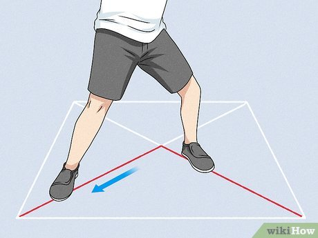

History of Arnis
Arnis, also known as Kali or Eskrima, is the national martial art of the Philippines. Its origins trace back to indigenous populations using bladed weapons and sticks for self-defense and combat. Over centuries, it evolved through Spanish colonization, masking its deadly techniques within traditional dances. Today, it is recognized globally for its speed, agility, and practical self-defense applications.
6 Basic Fighting Stances
Click on any stance to see its details.
Basic Grip

Hold the stick about one fist-length away from the bottom edge (the punyo). Grip it firmly but not rigidly, wrapping your fingers around the stick with your thumb locked over your index finger.
5 Basic Blocking Techniques
Click on any block to see its details.
Basic Footwork

Footwork is the foundation of Arnis. The triangular footwork (V-step) allows you to evade attacks while positioning yourself for a counter-strike. Always maintain your balance center.
The 12 Striking Techniques
Click on any technique to see its demonstration and details.